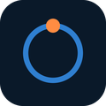

Life OS è uno strumento personale ad uso privato di Giuseppe Palese: una dashboard che raccoglie in un unico posto agenda, attività e altre informazioni della vita quotidiana, e gira solo sul suo computer.
Non è un servizio pubblico e non è disponibile ad altri utenti.
Contatti: giuseppe.palese89@gmail.com